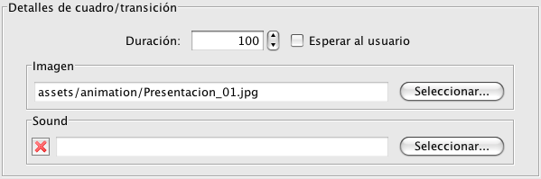

El editor de animaciones permite editar todo tipo de animaciones.

Las animaiciones pueden:
El botón de más (+) permite añadir nuevos cuadros a la animación (las transiciones se añaden automáticamente si esta seleccionada la opción). El botón de menos (-) permite quitar un cuadro de la conversación. Las flechas permiten cambiar el orden de los cuadros en la animación.
Cuando está seleccionado un cuadro, aparecen las siguientes opciones en la parte de abajo del panel:
En estas opciones podemos elegir la imagen y el sonido de el cuadro. Además, se puede configurar la duración en pantalla del cuadro. Cuando es una animación de transparencias, se puede elegir que espere a que el usuario haga click para continuar.
Cuando está seleccionada una transición de la animación, aparencen las siguientes opciones:
En estas opciones podemos elegir el tiempo que dura la transición (en milisegundos) y el tipo de transición (borrado, desplazamiento, etc.)